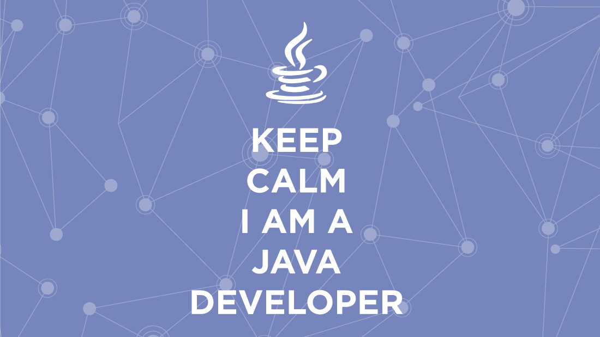

Le développeur Java est un concepteur sur mesure de programmes informatiques en langage Java ainsi que de leurs notices d'utilisation. Ainsi, son travail se déroule en 3 étapes : l'analyse du cahier des charges de son client au cours de laquelle il va dégager une bonne solution technique.
